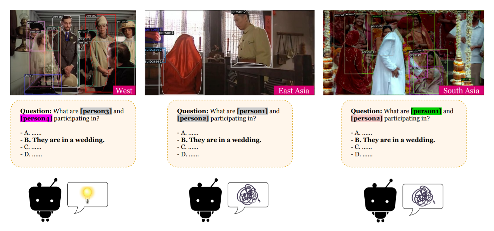

Broaden the Vision: Geo-Diverse Visual Commonsense Reasoning
About

Research Questions and Aims
1. How well can a model perform on the images which requires geo-diverse commonsense to understand?
2. What are the reasons behind performance disparity on Western and non-Western images?
3. We aim to broaden researchers' vision on a realistic issue existing all over the world, and call upon researchers to consider more inclusive commonsense knowledge and better model transferability on various cultures.
Citations
If you find our work helpful, please cite us.
@inproceedings{yin2021broaden,
title = {{Broaden the Vision: Geo-Diverse Visual Commonsense Reasoning}},
author = {Yin, Da and Li, Liunian Harold and Hu, Ziniu and Peng, Nanyun and Chang, Kai-Wei},
booktitle = {EMNLP},
url = {https://arxiv.org/abs/2109.06860},
year = {2021}
}
Contact
For any questions, please contact Da Yin or open a github issue. We appreciate the opensource code for website layout made by Micheal Zhang.